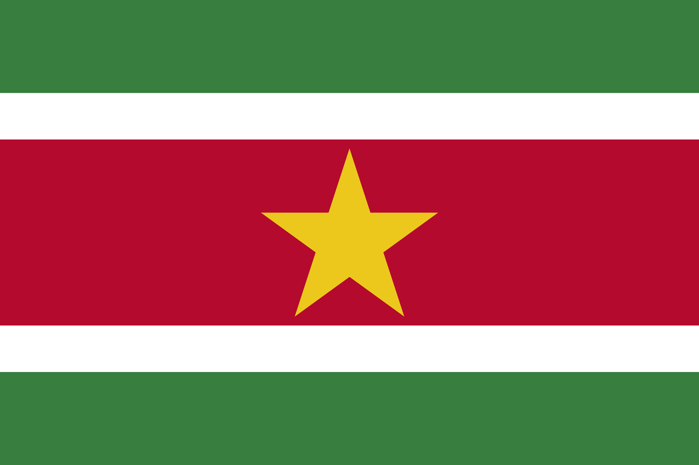
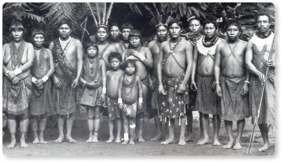
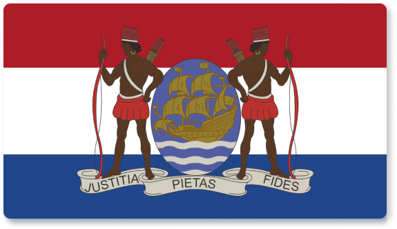
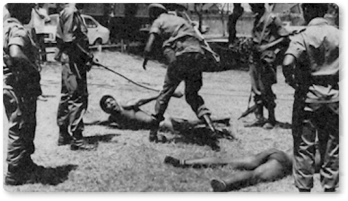
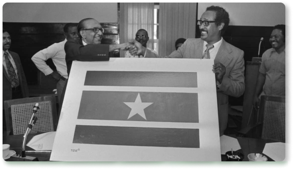

História do Suriname
A região do Suriname era habitada por tribos indígenas aruaques, tupis e caraíbas quando, até o século XV, quando os espanhóis chegaram à região. Porém, os primeiros a colonizarem a região onde hoje é o Suriname foram os ingleses. Com o objetivo de plantar açúcar, os ingleses trouxeram negros africanos para a região. Em 1667 a Inglaterra trocou a região do Suriname com a Holanda por uma cidade chamada Nova Amsterdã, que hoje é conhecida como New York (EUA). Apenas após o Congresso de Viana, em 1815, os holandeses conseguiram efetivar-se no poder do país, prosseguiram com a plantação de açúcar, iniciada pelos ingleses, e iniciaram o cultivo do café na região. A região era chamada de Guiana Holandesa.
 
Em 1863, com a abolição da escravatura, teve início a imigração de servos em regime de contrato, pois a mão-de-obra estava escassa. Os imigrantes foram trazidos principalmente do Oriente, de países como a Índia, China e Indonésia. Os conflitos entre etnias e a grande quantidade de imigrantes atrasou o surgimento de um sentimento nacional. Em 1954, o Suriname (ainda como Guiana Holandesa) passou a ter um governo próprio, embora tal governo fosse submetido ao da Holanda. A Guiana Holandesa se tornou independente em 1975, quando passou a se chamar Suriname. O primeiro governo do Suriname foi derrubado cinco anos depois, em 1980. Os militares assumiram o poder, declararam estado de emergência, foram proibidos os partidos políticos e estabelecida a censura. Devido à morte de vários civis pelas mãos do governo ditador, a Holanda e os Estados Unidos deixaram de ajudar financeiramente o país, o que causou uma crise financeira. Após sete anos de guerrilha, em 1987, a Frente para a Democracia e o Desenvolvimento derrotou os militares.
 
No ano seguinte foi eleito Remsewak Shankar, que formou um governo multirracial, mais foi derrubado em 1990. Sob forte pressão internacional, em 1991, foram realizadas eleições no Suriname. Ronald Venetiaan foi eleito, e permaneceu no poder até 1996. Jules Wijdenbosch, do Partido Nacional Democrático (NDP) foi eleito em 1997. Nas eleições no ano 2000, Ronald Venetiaan, aos 64 anos, foi eleito pela segunda vez presidente do Suriname, pelo partido crioulo NPS (nativo), da coalizão Nova Frente, e tem como maior desafio equilibrar a economia do país.